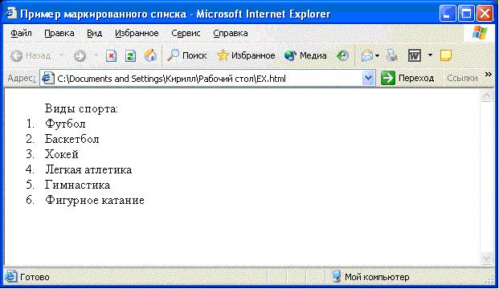
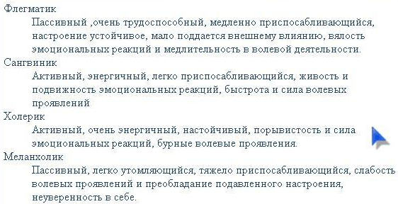

1.2.3 Списки:
<UL> </UL>-для создания маркированного списка.
Каждый элемент списка должен начинаться тэгом <LI>
<html>
<head>
<title>Пример маркированного списка </title>
</head>
<body>
<ul> Виды спорта:
<li> Футбол</li>
<li> Баскетбол</li>
<li> Хокей</li>
<li> Легкая атлетика</li>
<li> Гимнастика</li>
<li> Фигурное катание</li>
</ul>
</body>
</html>
Нумерованный список:
<OL> </OL>

В тэге <OL> используется параметр TYPE для задания вида нумерации списка и имеет следующие значения:
type = A – задает маркеры в виде прописных латинских букв;
type = a – задает маркеры в виде строчных латинских букв;
type = I – задает маркеры в виде больших римских цифр;
type = i – задает маркеры в виде маленьких римских цифр;
type = 1 – задает маркеры в виде арабских цифр.
Пример записи: <li type = A>
Параметр START с теми же значениями может употребляться для указания вида нумерации отдельных элементов списка.
Пример :
< ol type = I start = 5 >
Список определений:

Списки определений задаются с помощью тэга-контейнера <DL></DL>.
Внутри контейнера тэгом <DT> помечается определяемый термин, а тэгом <DD> - абзац с его определением.
<HTML>
<HEAD>
<TITLE> Список определений </TITLE>
</HEAD>
<BODY>
<dl>
<dt> Флегматик</dt>
<dd> Пассивный, очень трудоспособный, медленно приспосабливающийся, настроение устойчивое, мало поддается внешнему влиянию, вялость эмоциональных реакций и медлительность в волевой деятельности.</dd>
<dt>Сангвиник</dt>
<dd>Активный, энергичный, легко приспосабливающийся, живость и подвижность эмоциональных реакций, быстрота и сила волевых проявлений </dd>
<dt>Холерик </dt>
<dd>Активный, очень энергичный, настойчивый, порывистость и сила эмоциональных реакций, бурные волевые проявления. </dd>
<dt> Меланхолик</dt>
<dd> Пассивный, легко утомляющийся, тяжело приспосабливающийся, слабость волевых проявлений и
преобладание подавленного настроения, неуверенность в себе.</dd>
</dl>
</BODY>
</HTML>
Вернуться на главную страницу